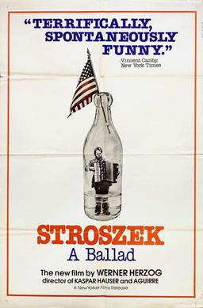

Werner Herzog
1977
107 minutes
This is another Herzog film with Bruno S., that "weird little guy" as one of your now-dead friends would always refer to him. Like your now-dead friend, it has a downer ending. It is the last film that Ian Curtis from Joy Division watched before his suicide by hanging, as accurately portrayed by the film 24 Hour Party People, as you will see or have already seen in Section 221.
The legend is that Ian Curtis hanged himself by putting a noose around his neck and standing on a large block of ice and waiting, though it's not clear where in the process of watching Stroszek he was when this idea occurred to him. Superfans of the film and the band might try syncing this up as soon as they move to Wisconsin for a sort of extreme Dark Side of the Moon/Wizard of Oz experience, but this is not recommended.
Your now-deceased wife (who died unexpectedly and prematurely of heart failure, not suicide) was a huge fan of Joy Division, and you're sad you never got to share this film with her. As a native of the Badger State, she would have enjoyed the Wisconsin elements and the Joy Division connection. She generally despised Reggae and she did not share your enthusiasm for Dub. Early in your relationship you took this as a challenge and introduced her to a band called Jah Division, who did slow chill bass-heavy versions of Joy Division songs. She quite enjoyed this, which you took as a good sign.
As someone who worked as a DJ, part of your love language is introducing people to pieces of culture that you think they would like. This is particularly true for music, but it applies to books and films and artworks and even abstract thoughts and ideas as well. And it goes both ways. Your favorite people have tended to be people who would share new things with you as well, and every one of them who has dropped from your life through death or estrangement or other tragedy has been one less source of joyful inspiration.
You have an urge to grab a microphone, even a dead one, and howl your favorite things into the void in case another passing soul is there to hear it.
Time to choose something different: